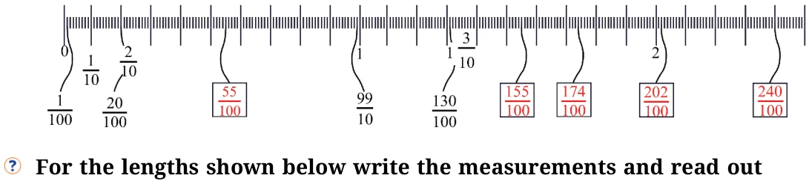
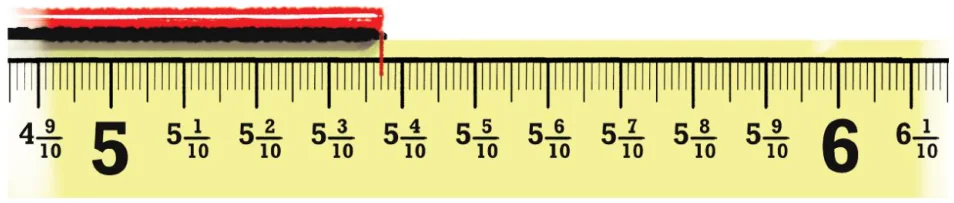
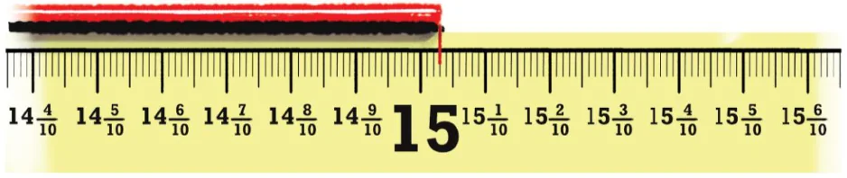
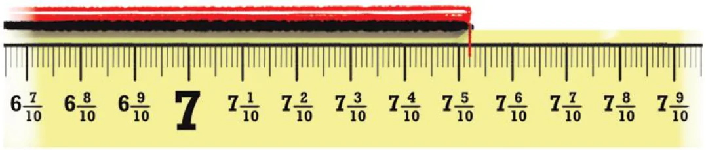
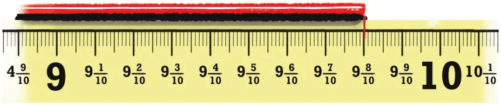
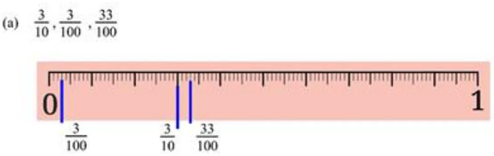
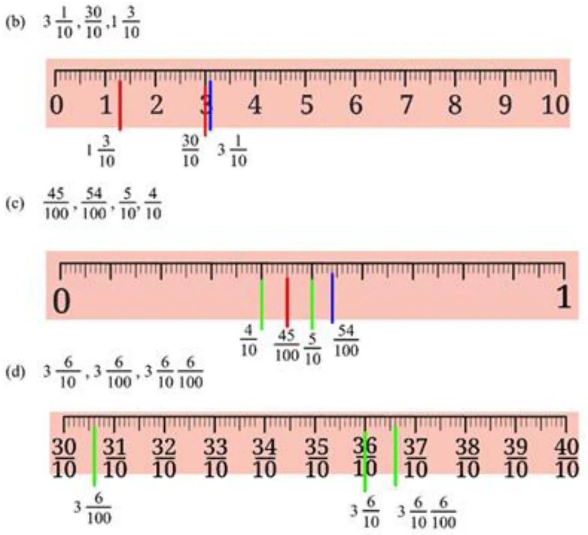
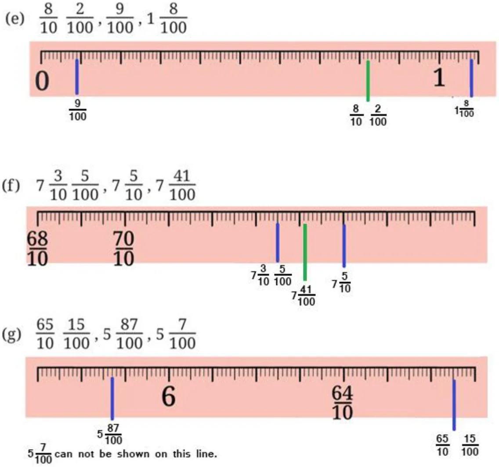

Ans:
- (a)4, \(4 \frac{3}{10}\) , \(4 \frac{6}{10}\) , \(4 \frac{9}{10}\) , \(5 \frac{2}{10}\) , \(5 \frac{5}{10}\) , \(5 \frac{8}{10} \to\) increment of 310 each time.
- (b)\(8 \frac{2}{10}\) , \(8 \frac{7}{10}\) , \(9 \frac{2}{10}\) , \(9 \frac{7}{10}\) , \(10 \frac{2}{10}\) , 10 10 , \(11 10 \to\) increment of 510 each time.
- (c)\(7 \frac{6}{10}\) , \(8 \frac{7}{10}\) , \(9 \frac{8}{10}\) , \(10 \frac{9}{10}\) , 12, \(13 10 \to\) increment of \(1 + \frac{1}{10}\)
- (d)\(5 \frac{7}{10}\) , \(5 \frac{3}{10}\) , \(4 \frac{9}{10}\) , \(4 \frac{5}{10}\) , \(4 \frac{1}{10}\) , \(3 10 \to\) subtracting: 410 each time
- (e)\(13 \frac{5}{10}\) , 13 , \(12 \frac{5}{10}\) , 12, \(11 \frac{5}{10}\) , 11, \(10 10 \to\) decreasing by \(\frac{5}{10}\)
- (f)\(11 \frac{5}{10}\) , \(10 \frac{4}{10}\) , \(9 \frac{3}{10}\) , 8 10 , 7 10 , \(6 \to\) decreasing by \(1 \frac{1}{10}\)
Page No. 53
How many one‑hundredths make one‑tenth? Can we also say that the length is 4 units and 45 one‑hundredths?
Ans: \(\frac{1}{10} = \frac{10}{100}\)
So, 10 one‑hundredths make one‑tenth.
Yes, we can write it \(4 + \frac{45}{100} = 4\) units and 45 one‑hundredths.
Page No. 54
Observe the figure below. Notice the markings and the corresponding lengths written in the boxes when measured from 0. Fill the lengths in the empty boxes.
Ans:

the measures in words.
Ans:

Measurement \(- 5 \frac{37}{100}\)
In words: Five and thirtyseven-hundredths.

Measurement \(- 15 \frac{3}{100}\)
In words: Fifteen and three-hundredths.
Page No. 55

Measurement \(- 7 \frac{52}{100}\)
In words: Seven and fiftytwo-hundredths.

Measurement \(- 9 \frac{80}{100}\)
In words: Nine and eighty-hundredths.
In each group, identify the longest and the shortest lengths. Mark each length on the scale.
Ans:


- (a)Longest \(= \frac{33}{100}\) Shortest \(= \frac{3}{100}\)
- (b)Longest \(= 3 \frac{1}{10}\) Shortest \(= 1 \frac{3}{10}\)
- (c)Longest \(= \frac{54}{100}\) Shortest \(= \frac{4}{10}\)
- (d)Longest \(= 3 \frac{6}{10} \frac{6}{100}\) Shortest \(= 3 \frac{6}{100}\)
Page No. 56

- (e)Longest \(= 1 \frac{8}{100}\) Shortest \(= \frac{9}{100}\)
- (f)Longest \(= 7 \frac{5}{100}\) Shortest \(= 7 \frac{3}{10} \frac{5}{100}\)
- (g)Longest \(= \frac{65}{10} \frac{15}{100}\) Shortest \(= 5 \frac{7}{100}\)